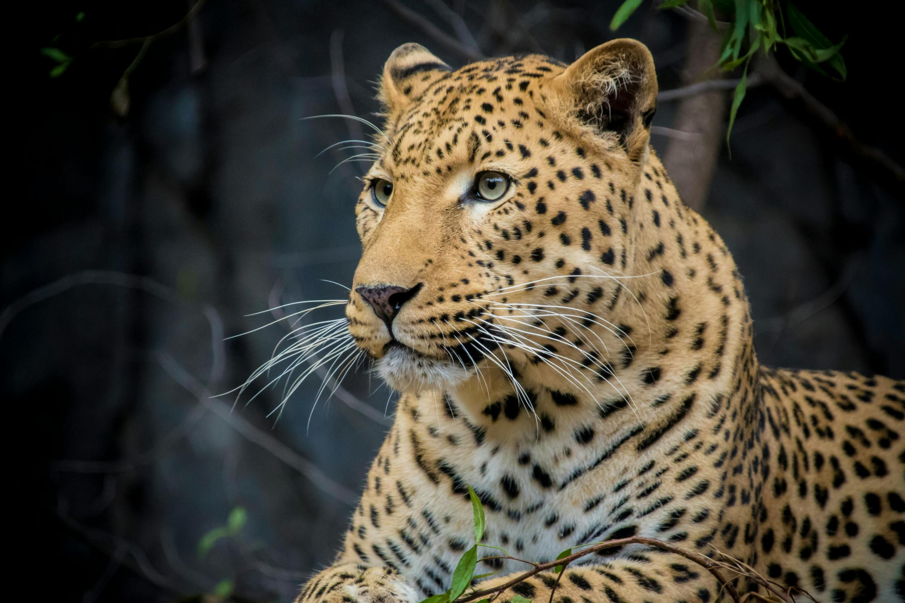
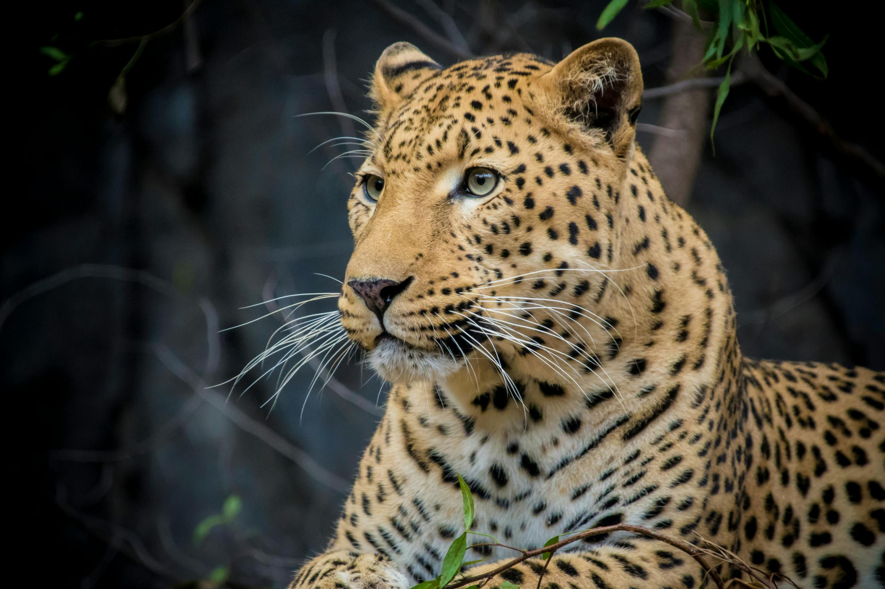
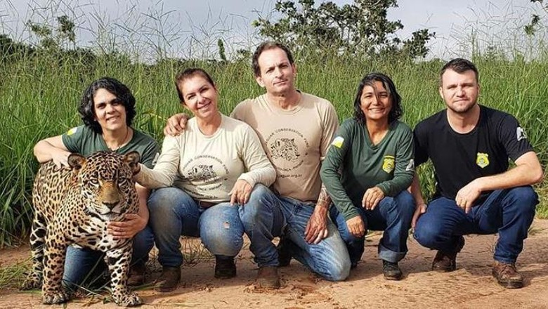
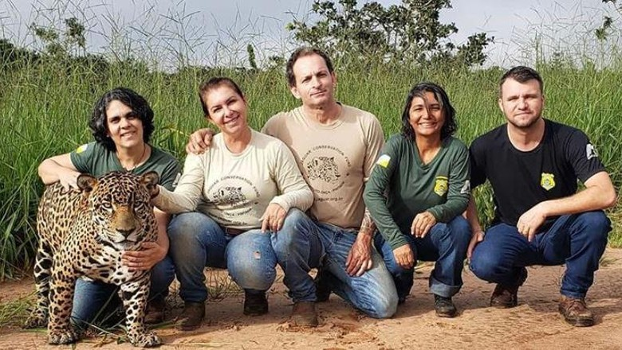

 



Projetos em destaque
Resgate e Reabilitação de Animais
Equipe especializada atua no resgate de espécies feridas por caça ilegal, garantindo tratamento, reabilitação e retorno seguro à natureza.
Educação Ambiental nas Comunidades
Programas educativos em escolas e vilarejos promovem a conscientização sobre convivência sustentável entre pessoas e fauna selvagem.
Reflorestamento da Savana
Iniciativas de plantio de espécies nativas restauram áreas degradadas, fortalecendo os ecossistemas e garantindo alimento e abrigo para os animais.
Proteção Contra a Caça Ilegal
Patrulhas de conservação e tecnologias de monitoramento ajudam a combater a caça e proteger espécies ameaçadas, como leões, elefantes e rinocerontes.

Como ajudar
Seja Voluntário
Participe das ações em todos os continentes, e nas escolas. Faça parte do nosso time!
Faça uma doação
Ajude nosso trabalho de proteção a continuar e crescer. Qualquer valor faz diferença.
Compartilhe
Divulgue nossos projetos nas redes sociais e amplie nossa mensagem!